Overlap report: Rapier port
Summary. With the final defaults, including anchors that let go of cells dragged more than 2 units away (anchorMaxStretch=2, adopted on 14 November), the deepest cell–cell penetration stayed below the target of 5% of the cell width at every snapshot of the 3-seed × 120 000-step validation (0 of 1173 over; worst 3.4%). A typical full-chamber snapshot (~1740 cells, ~2700 touching pairs) has its deepest pair at ~1% of the width and a mean of 0.17%. With anchors that never let go (the testbed’s behaviour), 1% of snapshots had a single pair over the target, up to 20.8%; the stretched anchor springs caused those. Box2D, measured the same way, is over the target in 86 of 91 snapshots.
What is measured
At every snapshot (every 300 steps) the runner measures, on the live simulation at full precision:
- cell–cell penetration depth for every pair of touching cells. Each cell is a capsule: the segment between its end-cap centres, swept by the radius. Two cells overlap by
2·radius − distance(axis₁, axis₂)when that is positive. Pairs are found with a uniform grid (cell size = longest cell + 2·radius), so every touching pair is tested exactly once. - per snapshot: the max, the mean over overlapping pairs, the 99th percentile, the number of overlapping pairs and of pairs deeper than the target, and where the deepest pair is;
- cell–wall penetration: the deepest any cell axis comes within one radius of the side and top walls or of the small wall triangles (a cell axis crossing a wall counts as one radius).
The exported states cannot be used for this: they are rounded to 2 decimals and an to 0.01·π, which alone moves a cell tip by up to ~0.03 (4% of the width).
Target: max cell–cell penetration < 5% of the cell width (0.040 for width 0.8) at every snapshot after a warm-up of 3000 steps. The initial 1000 cells are placed at random and overlap heavily (pairs crossing each other completely); Rapier separates them in ~1500–3000 steps. Resting contacts always sit slightly inside each other (~0.1–0.5% of the width): Rapier’s allowed penetration and soft contacts.
Tools: run.js --overlap-log FILE [--overlap-check], tools/overlap_report.py (tables), tools/overlap_chart.py (charts), and in the browser the overlap readout and the diagnostic view.
Final defaults on three seeds (120 000 steps each)
Rapier with the final defaults: 12 solver iterations, 720 Hz contact stiffness, colliders replaced on growth with the world rebuilt every 10 000 steps, all model fixes, and anchors that let go of a cell dragged more than 2 units from its anchor point (anchorMaxStretch=2). Seeds 7, 11 and 23. Statistics over the 391 snapshots after the warm-up (step 3000–120 000) of each run; percentages of the cell width.
| Seed | Snapshots over the target | Worst max | Median max | Mean (overlapping pairs) | Worst 99th pct | Wall: median / worst |
|---|---|---|---|---|---|---|
| 7 | 0 / 391 | 3.4% | 0.97% | 0.17% | 0.79% | 5.3% / 46% |
| 11 | 0 / 391 | 3.2% | 0.96% | 0.17% | 0.78% | 5.0% / 15% |
| 23 | 0 / 391 | 2.7% | 0.96% | 0.17% | 0.79% | 4.0% / 50% |
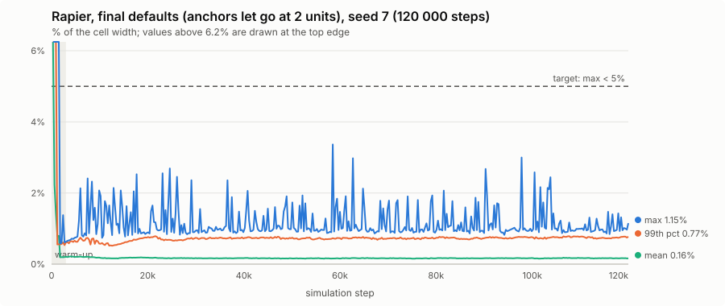
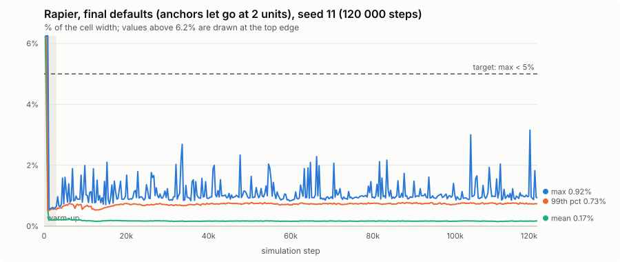
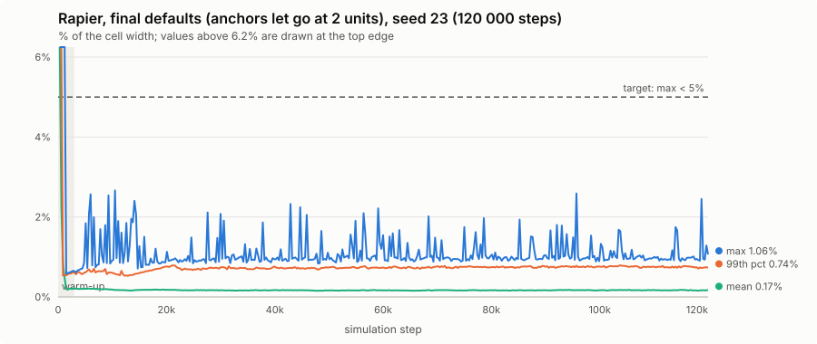
Typical state once the chamber is full (~1730–1760 cells, ~2700 touching pairs): mean penetration 0.17% of the width, 99% of contacts below 0.8%, the deepest pair around 1%.
Anchors that never let go (the testbed’s behaviour; the default until 14 November)
With anchorMaxStretch=0 the same three seeds had a few exceptions, and the 600 000-step run had 20:
| Run | Snapshots over the target | Worst max | Median max | Mean | Wall: median |
|---|---|---|---|---|---|
| seeds 7 / 11 / 23, 120 000 steps | 2 / 2 / 2 of 391 | 20.8% / 6.8% / 10.2% | 1.0% | 0.19% | 12–15% |
| seed 7, 600 000 steps | 20 of 1991 (1.0%) | 20.8% | 1.0% | 0.19% | 15% |
for comparison: anchorMaxStretch=1, seeds 7 / 11 / 23 |
0 / 0 / 0 of 391 | 3.4% | 1.0% | 0.17% | 2% |
Each exception was one pair (two pairs in a few snapshots), for a single snapshot. In the long run 15 of the 20 were under 10%; all were in the upper part of the chamber (y 149–198), mostly near the side walls, where anchored cells sit.
Cause (traced at seed 7, step 65 700, 20.8%): two cells in the wall zone, each held by two anchor springs stretched by 3–8 units. Anchors are 0.8 Hz springs (as in the testbed), too soft to hold a cell, so once the chamber is full the colony drags anchored cells several units away; the stretched spring then pulls back with ~ω²·stretch ≈ 160 units/s² (stretch 6), far above anything else acting on a cell. The two cells jitter against their neighbours at ~1 unit/s; one spins up from 0.04 to 5 rad/s within 9 steps and lands 0.17 inside the other, and the solver pushes it out over the next steps.
Letting anchors go also changes how the colony organises (averages over steps 15 000–120 000; ⟨cos 2θ⟩ = +1 for cells pointing at the exit, −1 for cells lying across the chamber):
| Anchors | ⟨cos 2θ⟩ centre (seeds 7 / 11 / 23) | ⟨cos 2θ⟩ wall zones | cells |
|---|---|---|---|
| never let go | +0.30 / +0.29 / +0.30 | −0.19 / −0.18 / −0.23 | 1725–1734 |
| let go at 2 units (default) | +0.52 / +0.49 / +0.47 | −0.13 / −0.19 / −0.19 | 1735–1746 |
| let go at 1 unit | +0.56 / +0.60 / +0.62 | −0.01 / +0.07 / +0.15 | 1752–1758 |
At 2 units the centre aligns more strongly with the flow, and the wall zones keep their organisation, with cells lying across the chamber. At 1 unit the wall zones change too.
Logs: data/overlap-rapier-anchorhold-*.csv (anchors never let go), data/overlap-rapier-anchorstretch{1,2}-*.csv.
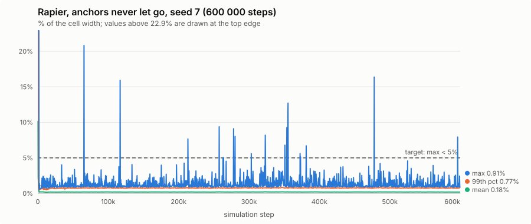
Other settings and Box2D (same measurement)
All Rapier rows here ran with anchors that never let go; compare them with the first row.
| Run | Snapshots over the target | Worst max | Median max | Mean | Worst 99th pct |
|---|---|---|---|---|---|
| Rapier, final solver settings, anchors never let go, seeds 7 / 11 / 23 | 2 / 2 / 2 of 391 | 20.8% | 1.0% | 0.19% | 0.8% |
| same, but no world rebuild (leaks memory) | 0 / 0 / 0 of 391 | 4.9% | 1.0% | 0.19% | 0.8% |
| same, but contacts refreshed by turning colliders by π | 2 / 2 / 8 of 391 | 11.2% | 1.0% | 0.19% | 0.9% |
| Rapier, 12 it., 480 Hz (no rebuild) | 2 / 0 / 1 of 391 | 8.7% / 4.3% / 100%¹ | 1.0% | 0.20% | 0.9% |
| Rapier, 8 it., 480 Hz (no rebuild) | 6 / 3 / 9 of 391 | 13.6% | 1.3–1.5% | 0.21% | 1.3% |
| Rapier, Rapier’s own solver defaults (4 it., 30 Hz), before the other fixes, seed 7, 30 000 steps | 62 / 91 | 100% | 15.6% | 1.7% | 27% |
| Box2D, anchors never let go, seed 7, 30 000 steps | 86 / 91 | 100% | 38.8% | 6.8% | 100% |
¹ a pair that crossed at the random start and separated only after the warm-up.
Without world rebuilds there were no exceptions (0 of 1173 vs 6 of 1173 with rebuilds). The runs follow different trajectories after the first rebuild (step 10 000) and the events are rare, but 0 vs 6 is unlikely to be pure chance (p ≈ 0.03), so the rebuild may contribute, e.g. through the contact and spring caches starting cold (positions, angles, velocities, masses and springs are carried over exactly). It does not cause exceptions on its own: the anchorMaxStretch runs also rebuild every 10 000 steps and had none in 2346 snapshots. Running without rebuilds is not an option for long runs (memory; see NOTES.md).
The Box2D port is far from the target: its random start leaves pairs crossed through each other for the whole run (it never separates them), and once the chamber fills its packing is denser (~1850–1940 cells vs ~1700–1760 in Rapier) with ~340 pairs per snapshot deeper than the target.
Cell–wall penetration
Not part of the target (pairwise), but measured. With the defaults the deepest cell–wall contact per snapshot is typically 4–5% of the cell width (median per seed), in the dead-end top corners and between the small wall triangles, where the colony’s pressure ends. Occasionally a cell’s axis still reaches a wall line (worst 46–50% in two of the three seeds). With anchors that never let go the median was 12–15%.
Browser screenshots
A 60 000-step session in headless Chrome with the final defaults (index.html?seed=7, 200 steps per frame; the page confirmed anchorMaxStretch=2), paused every ~6000 steps for screenshots: the whole chamber in the phase-contrast and diagnostic views, and diagnostic close-ups (~18 × 11 units) around the deepest pair at the last snapshot and of the top-left corner. In the diagnostic view each cell has its true capsule outline, and anchors are black squares with a line to their cell. Pairs deeper than 1% of the width are drawn orange, deeper than the target red. At the close-up zoom one pixel is ~0.013 units, so a 5% overlap (0.04) would show as ~3 pixels of outline crossing a neighbour.
Readouts at each pause (overlap at the last snapshot; screenshots/browser-session.log): max 0.81–1.74% at every pause from step 6400 to 60 400; mean 0.16–0.21%; deepest wall contact 0.4–16%. There were no red pairs and no page errors, and the images show no visible overlap. The anchor lines are now all short (≤ 2 units). The session also downloaded the states through the page’s own download(): 17.7 MB, 206 snapshots, 10 942 cell ids, valid LowRes.json.
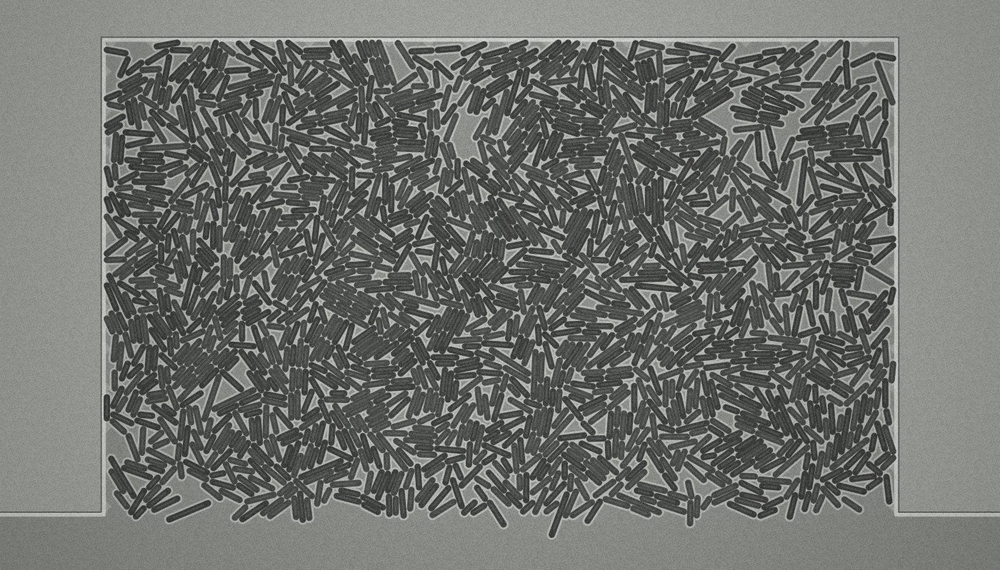 |
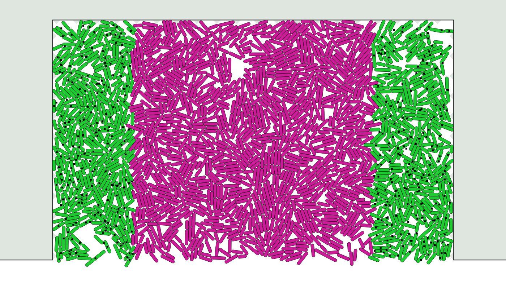 |
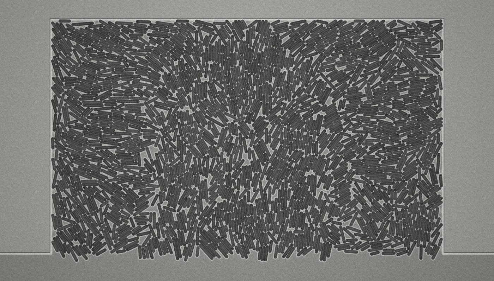 |
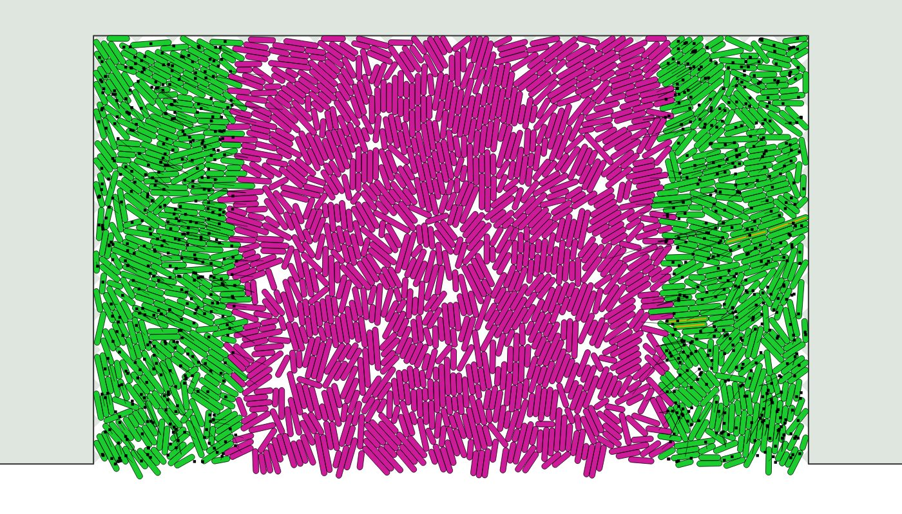 |
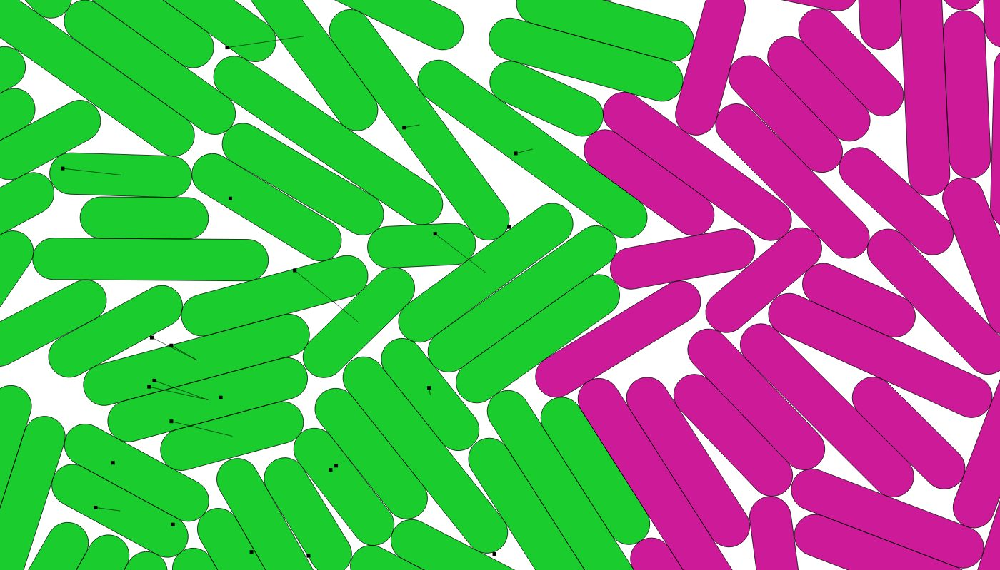 |
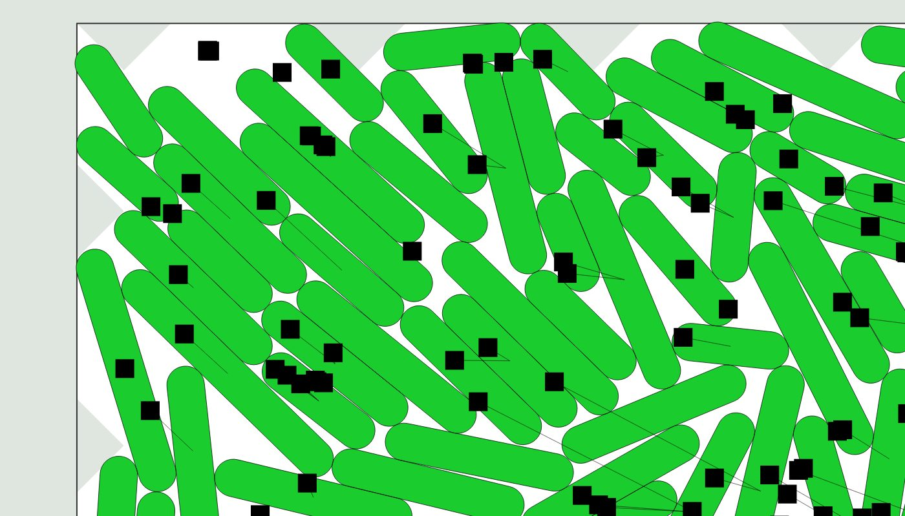 |
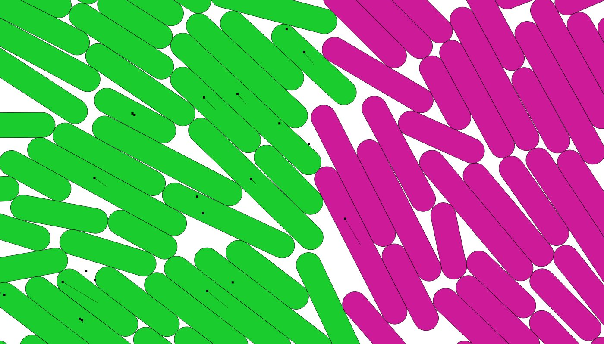 |
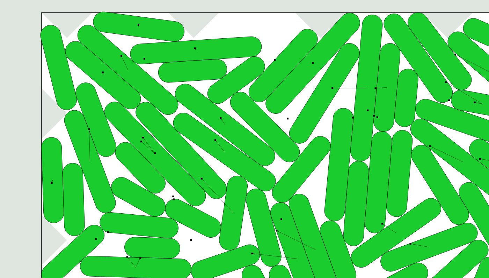 |
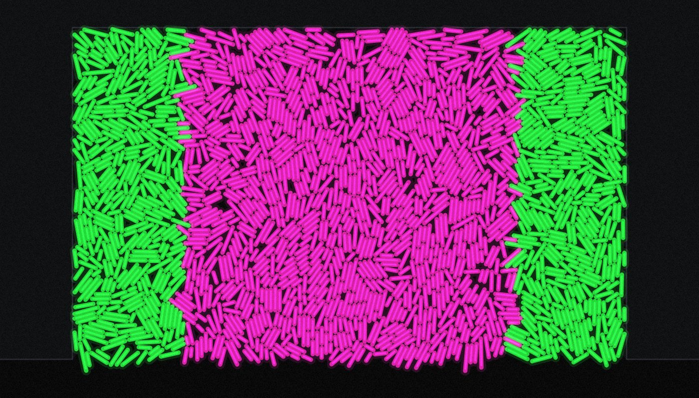 |
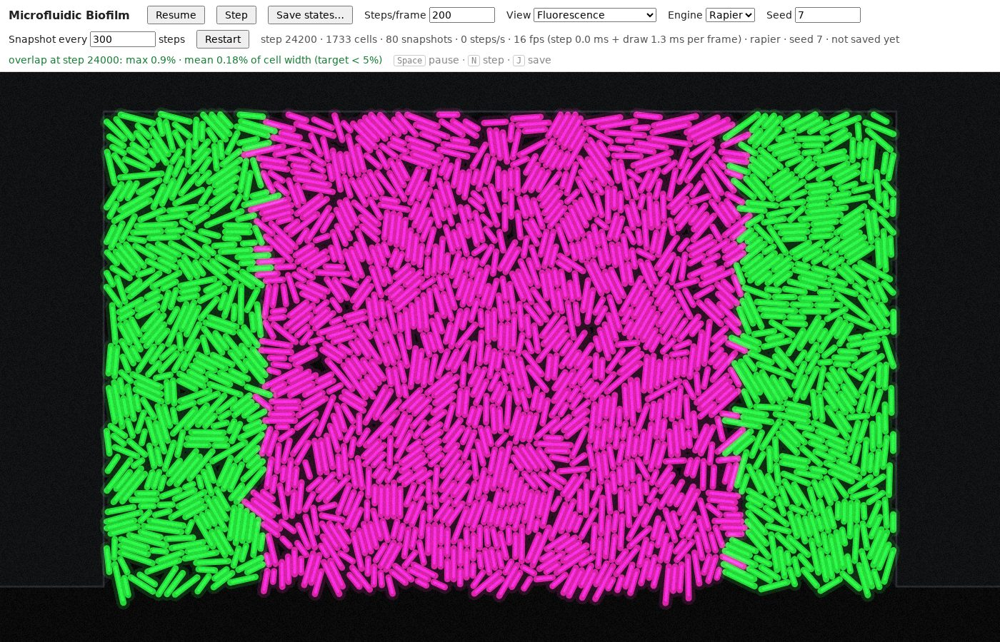 |